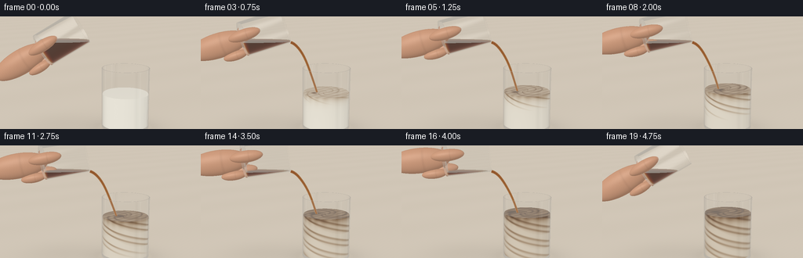
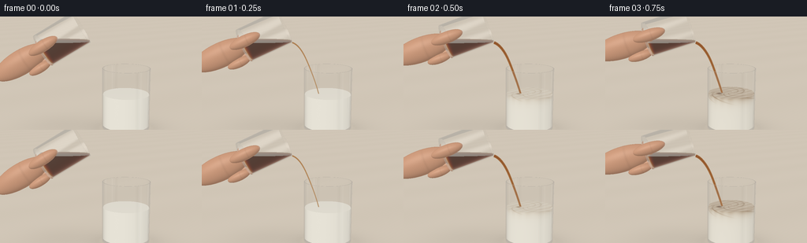

CODING AGENTS AS PIXEL WORLD MODELS
traex/GPT-6.1-Sol · material_0021
点击播放 · 原生 RGB 像素
逐轮保存的候选
回放视频、检查图与代码变化。
每份候选均可单独播放。实际图片检查记录在下方工具轨迹中。
候选 01播放与检查图
点击播放 · 原生 RGB 像素


展开代码变化
--- 上一保存版本
+++ 本次保存版本
@@ -0,0 +1,354 @@
+"""Deterministic, analytic optical rendering of a coffee pour; no external assets."""
+import json
+from pathlib import Path
+import numpy as np
+from PIL import Image
+import artifact_io
+
+ROOT = Path(__file__).resolve().parent
+SPEC = json.loads((ROOT/'task_spec.json').read_text())
+W,H=SPEC['width'],SPEC['height']
+SS=3
+RW,RH=W*SS,H*SS
+EPS=0.00006
+
+def unit(v):
+ return v/np.maximum(np.linalg.norm(v,axis=-1,keepdims=True),1e-12)
+
+def dot(a,b): return np.sum(a*b,axis=-1)
+
+def environment(d, p=None):
+ # A softly lit warm studio, a tall window on the left and a negative fill card.
+ y=d[:,1]
+ col=np.empty((len(d),3))
+ col[:]=[.49,.453,.398]
+ col+=np.clip(y[:,None],-.8,.9)*np.array([.075,.077,.081])
+ window=np.exp(-((d[:,0]+.50)/.26)**8-((d[:,1]-.44)/.40)**8)*np.exp(-((d[:,2]-.64)/.70)**8)
+ col+=window[:,None]*np.array([1.65,1.63,1.56])
+ strip=np.exp(-((d[:,0]-.72)/.10)**6-((d[:,1]-.15)/.60)**8)*np.clip(d[:,2]*2,0,1)
+ col=col*(1-.83*strip[:,None])
+ # Very thin white rim illumination on the right.
+ rim=np.exp(-((d[:,0]-.82)/.047)**4-((d[:,1]-.34)/.6)**6)
+ col+=rim[:,None]*.68
+ return np.maximum(col,0)
+
+LIGHT=unit(np.array([-.55,.77,1.1]))
+
+def backdrop(o,d):
+ col=environment(d)
+ t=np.divide(-o[:,1],d[:,1],out=np.full(len(d),np.inf),where=d[:,1]<-1e-8)
+ hit=(t>0)&(t<100)
+ if np.any(hit):
+ p=o[hit]+d[hit]*t[hit,None]
+ x,z=p[:,0],p[:,2]
+ noise=(np.sin(x*57+z*47)+np.sin(x*113-z*79)+np.sin(x*203+z*166))*.0015
+ broad=np.sin(x*1.7+z*2.4)*.005
+ base=np.array([.635,.566,.472])[None,:]+noise[:,None]+broad[:,None]
+ sh=.19*np.exp(-((x-.45)/.63)**2-(z/.53)**2)
+ sh+=.07*np.exp(-((x+.75)/.70)**2-((z+.1)/.65)**2)
+ sh+=.12*np.exp(-((x-.45)/.39)**2-(z/.22)**2)
+ base*=1-sh[:,None]
+ rad=np.sqrt(((x-.45)/.43)**2+(z/.34)**2)
+ caustic=.038*np.exp(-((rad-1.02)/.12)**2)
+ base+=caustic[:,None]*np.array([1,.86,.60])
+ col[hit]=base
+ # Defocused warm vertical background variations without distracting props.
+ no=~hit
+ if np.any(no):
+ u=d[no,0]/np.maximum(-d[no,2],.1)
+ col[no]=np.array([.50,.462,.404])+(.018*np.sin(u*5)+.012*np.cos(u*11))[:,None]
+ return col
+
+# A capped cylinder clipped by an optional horizontal liquid surface.
+# A shell consists of outer and inner sidewalls, a thick bottom, and an annular lip.
+def cylinder_hits(o,d,obj):
+ B,A,r,h=obj['B'],obj['A'],obj['r'],obj['h']
+ q=o-B
+ qa=dot(q,A); da=dot(d,A)
+ qp=q-qa[:,None]*A; dp=d-da[:,None]*A
+ aa=dot(dp,dp); bb=2*dot(qp,dp)
+ n=len(o); best=np.full(n,np.inf); normal=np.zeros((n,3))
+ def consider(t,valid,nn):
+ nonlocal best,normal
+ v=valid&(t>EPS)&(t<best)
+ best[v]=t[v]
+ if np.ndim(nn)==1: normal[v]=nn
+ else: normal[v]=nn[v]
+ def side(rad,lo,hi,reverse=False):
+ cc=dot(qp,qp)-rad*rad
+ disc=bb*bb-4*aa*cc
+ sd=np.sqrt(np.maximum(disc,0))
+ for sign in [-1,1]:
+ t=(-bb+sign*sd)/np.maximum(2*aa,1e-15)
+ ax=qa+t*da
+ p=q+t[:,None]*d
+ nn=(p-ax[:,None]*A)/rad
+ if reverse: nn=-nn
+ valid=(disc>=0)&(ax>=lo)&(ax<=hi)
+ if 'level' in obj: valid&=(o[:,1]+t*d[:,1]<=obj['level']+1e-6)
+ consider(t,valid,nn)
+ def cap(ax,rr,nn,rin=0):
+ t=np.divide(ax-qa,da,out=np.full(n,np.inf),where=np.abs(da)>1e-9)
+ p=qp+t[:,None]*dp
+ rad2=dot(p,p)
+ valid=(rad2<=rr*rr)&(rad2>=rin*rin)
+ if 'level' in obj: valid&=(o[:,1]+t*d[:,1]<=obj['level']+1e-6)
+ consider(t,valid,nn)
+ if obj['kind']=='glass':
+ ri=r-obj['thick']; b=obj['bottom']
+ side(r,0,h); side(ri,b,h,True)
+ cap(0,r,-A)
+ cap(b,ri,A)
+ cap(h,r,A,ri)
+ else:
+ side(r,0,h)
+ cap(0,r,-A)
+ cap(h,r,A)
+ if 'level' in obj:
+ t=np.divide(obj['level']-o[:,1],d[:,1],out=np.full(n,np.inf),where=np.abs(d[:,1])>1e-10)
+ p=q+t[:,None]*d
+ ax=dot(p,A)
+ rad=dot(p-ax[:,None]*A,p-ax[:,None]*A)
+ consider(t,(rad<=r*r)&(ax>=0)&(ax<=h),np.array([0.,1.,0.]))
+ return best,normal
+
+def ellipsoid_hit(o,d,obj):
+ mat=obj['mat']; c=obj['center']
+ q=(o-c)@mat; v=d@mat
+ aa=dot(v,v); bb=2*dot(q,v); cc=dot(q,q)-1
+ disc=bb*bb-4*aa*cc
+ t=(-bb-np.sqrt(np.maximum(disc,0)))/(2*aa)
+ t=np.where((disc>=0)&(t>EPS),t,np.inf)
+ p=q+np.where(np.isfinite(t),t,0)[:,None]*v
+ normal=unit(p@mat.T)
+ return t,normal
+
+def density(p,time,level):
+ x,y,z=p[:,0],p[:,1],p[:,2]
+ elapsed=max(0,time-.30)
+ age=np.clip(elapsed/3.9,0,1)
+ depth=np.maximum(level-y,0)
+ # A heavy brown plume curls downward, then folds into sheets around the glass.
+ front=np.clip(elapsed*.27-depth,0,1)
+ xx=.27+.07*np.sin(depth*15-elapsed*2.1)+.032*np.sin(depth*30+elapsed)
+ zz=.018+.07*np.sin(depth*12+elapsed*1.3)
+ width=.034+.063*age+.05*depth
+ plume=np.exp(-((x-xx)**2+(z-zz)**2)/(width*width))
+ plume*=np.clip(front*9,0,1)*(.75-.25*age)
+ radius=np.sqrt((x-.44)**2+(z-.00)**2)
+ ang=np.arctan2(z,x-.44)
+ swirl=np.sin(depth*24+ang*2.8-elapsed*1.8+radius*17)
+ sheet=np.exp(-((swirl-.40)/(.16+.21*age))**2)
+ sheet*=np.clip(front*5,0,1)*np.exp(-depth*1.15)*(.28+.12*age)
+ # Cream remains visible between ribbons; the top progressively becomes caramel.
+ surface=np.exp(-depth/ .060)*(.20+.30*age)*np.clip(elapsed*1.8,0,1)
+ surface*= .55+.45*np.sin(x*17+z*19-elapsed)**2
+ base=.105*age*(.7+.3*np.exp(-depth*2))
+ return np.clip(base+plume+sheet+surface,0,1)
+
+def milk_color(p,n,d,time,level):
+ # Integrate a few samples just inside the scattering liquid for translucent marbling.
+ pp=p-d*.004
+ f=np.zeros(len(p))
+ for step,weight in [(0,.52),(.025,.26),(.065,.15),(.13,.07)]:
+ f+=density(pp+d*step,time,level)*weight
+ col=np.array([.86,.827,.733])[None,:]*np.exp(-f[:,None]*np.array([2.9,4.0,5.2]))
+ top=n[:,1]>.6
+ shade=.81+.19*np.clip(dot(n,LIGHT),0,1)
+ # Interior milk is softly multiply scattered, not a hard-shaded plastic cylinder.
+ shade=np.where(top,.92+.08*np.clip(dot(n,LIGHT),0,1),shade)
+ col*=shade[:,None]
+ ripple=.004*np.sin(p[:,0]*78+p[:,2]*58-time*9)*np.exp(-((p[:,0]-.28)**2+p[:,2]**2)/.05)
+ nr=n.copy(); nr[top,0]+=ripple[top]*5; nr=unit(nr)
+ reflection=d-2*dot(d,nr)[:,None]*nr
+ cos=np.clip(-dot(d,nr),0,1)
+ fres=.018+.982*(1-cos)**5
+ fres=np.minimum(fres,.27)
+ col=col*(1-fres[:,None])+environment(reflection)*fres[:,None]
+ return col
+
+def skin_color(p,n,d,obj):
+ diffuse=.48+.52*np.maximum(dot(n,LIGHT),0)
+ fill=.08*np.maximum(n[:,0],0)
+ grain=.008*np.sin(p[:,0]*170+p[:,1]*121)*np.sin(p[:,2]*223)
+ col=np.array([.64,.344,.215])[None,:]*(diffuse+fill+grain)[:,None]
+ half=unit(LIGHT-d)
+ spec=.085*np.maximum(dot(n,half),0)**30
+ col+=spec[:,None]*np.array([1,.83,.7])
+ # Subtle creases across the thumb, not outlined illustration strokes.
+ local=(p-obj['center'])@obj['mat']
+ crease=np.exp(-((local[:,0]-.18)/.040)**2)*np.exp(-(local[:,1]/.9)**4)
+ col*=1-.075*crease[:,None]
+ return col
+
+
+def make_hand(B,A):
+ up=np.array([-A[1],A[0],0.])
+ z=np.array([0.,0.,1.])
+ rot=np.stack([A,up,z],axis=1)
+ def ell(center,radii):
+ return {'kind':'skin','center':center,'mat':rot@np.diag(1/np.array(radii))}
+ return [ell(B-A*.45+up*.02,[.55,.22,.17]),
+ ell(B+A*.095+up*.08+z*.265,[.28,.10,.105]),
+ ell(B-A*.06-up*.18-z*.11,[.26,.095,.11]),
+ ell(B-A*.21-up*.235+z*.03,[.22,.083,.095])]
+
+
+def geometry(time):
+ # The rim is held steady as the base rises, so the pour has a calm natural motion.
+ if time<.65:
+ theta=np.deg2rad(59+13*(time/.65)**.8)
+ lift=0
+ elif time<4.15:
+ theta=np.deg2rad(72+12*(time-.65)/3.5)
+ lift=0
+ else:
+ q=np.clip((time-4.15)/.6,0,1)
+ theta=np.deg2rad(84-24*q)
+ lift=.13*q
+ A=np.array([np.sin(theta),np.cos(theta),0.])
+ side=np.array([np.cos(theta),-np.sin(theta),0.])
+ lip=np.array([-.18-.11*lift,1.565+lift,.0])
+ R=.306; length=.78
+ top=lip-side*R
+ B=top-A*length
+ glass={'kind':'glass','B':B,'A':A,'r':R,'h':length,'thick':.012,'bottom':.030}
+ source={'kind':'coffee','B':B+A*.031,'A':A,'r':R-.013,'h':length-.032,
+ 'level':1.597-.027*np.clip(time/4.15,0,1)+lift*.03}
+ target={'kind':'glass','B':np.array([.45,.028,0.]),'A':np.array([0.,1.,0.]),'r':.425,'h':1.08,'thick':.012,'bottom':.046}
+ amount=np.clip((time-.3)/3.9,0,1)
+ level=.646+.187*amount
+ milk={'kind':'milk','B':np.array([.45,.075,0.]),'A':np.array([0.,1.,0.]),'r':.411,'h':1.032,'level':level}
+ objects=[target,glass,milk,source]+make_hand(B,A)
+ # Ballistic gently falling thread. Each connected segment is an analytic cylinder.
+ strength=np.clip((time-.18)/.27,0,1)*np.clip((4.48-time)/.32,0,1)
+ if strength>0:
+ N=14
+ # Ends slightly below the surface, with a little wavering highlight.
+ length_y=lip[1]-level+.015
+ s=np.linspace(0,1,N+1)
+ points=np.stack([lip[0]+.465*s+.006*np.sin(s*9-time*3)*s,
+ lip[1]-length_y*(.16*s+.84*s*s),
+ .002*np.sin(s*7-time*4)*s],axis=1)
+ for k in range(N):
+ aa=points[k+1]-points[k]; hh=np.linalg.norm(aa)
+ objects.append({'kind':'stream','B':points[k]-aa*.012,'A':aa/hh,'r':(.026-.008*s[k])*strength**.5,
+ 'h':hh*1.025})
+ return objects,level
+
+CAM=np.array([0.,2.48,6.8]); LOOK=np.array([0.,1.02,0.])
+FWD=unit(LOOK-CAM)
+RIGHT=unit(np.cross(FWD,np.array([0.,1.,0.])))
+UP=np.cross(RIGHT,FWD)
+Y,X=np.mgrid[0:RH,0:RW]
+X=(X+.5-RW/2)/RH; Y=(RH/2-Y-.5)/RH
+vfov=np.deg2rad(16.4)
+RAYS=unit(FWD+X[...,None]*2*np.tan(vfov/2)*RIGHT+Y[...,None]*2*np.tan(vfov/2)*UP).reshape(-1,3)
+
+
+def render(time):
+ objects,level=geometry(time)
+ count=len(RAYS)
+ result=np.zeros((count,3))
+ active=np.arange(count)
+ o=np.broadcast_to(CAM,(count,3)).copy(); d=RAYS.copy(); throughput=np.ones((count,3))
+ for bounce in range(9):
+ if len(active)==0: break
+ dist=np.full(len(active),np.inf); normals=np.zeros((len(active),3)); index=np.full(len(active),-1,dtype=int)
+ for k,obj in enumerate(objects):
+ if obj['kind']=='skin': tt,nn=ellipsoid_hit(o,d,obj)
+ else: tt,nn=cylinder_hits(o,d,obj)
+ mask=tt<dist
+ dist[mask]=tt[mask]; normals[mask]=nn[mask]; index[mask]=k
+ miss=index<0
+ if np.any(miss): result[active[miss]]+=throughput[miss]*backdrop(o[miss],d[miss])
+ keep=np.zeros(len(active),dtype=bool)
+ next_o=o.copy(); next_d=d.copy(); next_thr=throughput.copy()
+ for k,obj in enumerate(objects):
+ mask=index==k
+ if not np.any(mask): continue
+ dd=d[mask]; nn=normals[mask]; p=o[mask]+dist[mask,None]*dd
+ kind=obj['kind']
+ if kind=='glass':
+ entering=dot(dd,nn)<0
+ facing=nn*np.where(entering,1.,-1.)[:,None]
+ cos=np.clip(-dot(dd,facing),0,1)
+ eta=np.where(entering,1/1.49,1.49)
+ kk=1-eta*eta*(1-cos*cos)
+ tir=kk<0
+ reflection=dd+2*cos[:,None]*facing
+ f=.0387+(1-.0387)*(1-cos)**5
+ f[tir]=1
+ refl=environment(reflection)
+ # A rim catches a narrow softbox highlight and reveals wall thickness.
+ result[active[mask]]+=throughput[mask]*f[:,None]*refl
+ refr=eta[:,None]*dd+(eta*cos-np.sqrt(np.maximum(kk,0)))[:,None]*facing
+ refr[tir]=reflection[tir]
+ # Follow total internal reflections instead of extinguishing the edge.
+ if np.any(tir):
+ result[active[mask][tir]]-=throughput[mask][tir]*refl[tir]*.72
+ refr=unit(refr)
+ next_o[mask]=p+refr*EPS*2
+ next_d[mask]=refr
+ tr=np.where(tir,.72,1-f)
+ next_thr[mask]=throughput[mask]*tr[:,None]*np.array([.9985,.9995,.9990])
+ keep[mask]=np.max(next_thr[mask],axis=1)>.012
+ elif kind=='milk':
+ nn=np.where((dot(dd,nn)>0)[:,None],-nn,nn)
+ result[active[mask]]+=throughput[mask]*milk_color(p,nn,dd,time,level)
+ elif kind=='skin':
+ result[active[mask]]+=throughput[mask]*skin_color(p,nn,dd,obj)
+ else:
+ # Brown coffee absorbs blue rapidly but passes amber at thin edges.
+ facing=np.where((dot(dd,nn)>0)[:,None],-nn,nn)
+ cos=np.clip(-dot(dd,facing),0,1)
+ reflection=dd+2*cos[:,None]*facing
+ fr=.023+.977*(1-cos)**5
+ if kind=='stream':
+ thickness=2*obj['r']*np.maximum(cos,.12)
+ tr=np.exp(-thickness[:,None]*np.array([20.,45.,78.]))
+ bg=backdrop(p+dd*.01,dd)
+ core=np.array([.065,.021,.005])[None,:]
+ base=bg*tr+core*(1-tr)
+ fr=np.minimum(fr,.55)
+ # Finely running ribbons from the bright window.
+ shine=np.maximum(dot(facing,unit(np.array([-.6,.35,1.]))),0)**22*.26
+ base+=shine[:,None]*np.array([.78,.52,.21])
+ else:
+ # Infer optical chord through the cylinder, clipped by the free surface.
+ test=p+dd*.0003
+ tt,_=cylinder_hits(test,dd,obj)
+ thick=np.clip(np.nan_to_num(tt,posinf=.42),.01,.8)
+ tr=np.exp(-thick[:,None]*np.array([7.,17.,28.]))
+ base=backdrop(test+dd*.2,dd)*tr+np.array([.046,.012,.003])[None,:]*(1-tr)
+ shade=.75+.25*np.maximum(dot(facing,LIGHT),0)
+ base*=shade[:,None]
+ # The horizontal surface has a quiet amber meniscus.
+ is_top=facing[:,1]>.9
+ base[is_top]*=.68
+ fr=np.minimum(fr,.72)
+ col=base*(1-fr[:,None])+environment(reflection)*fr[:,None]
+ result[active[mask]]+=throughput[mask]*col
+ active=active[keep]; o=next_o[keep];d=next_d[keep];throughput=next_thr[keep]
+ if len(active): result[active]+=throughput*backdrop(o,d)
+ result=result.reshape(RH,RW,3)
+ # Gentle photographic contrast; preserve luminous milk and window highlights.
+ result=np.clip(result,0,1)
+ rgb=np.where(result<=.0031308,12.92*result,1.055*result**(1/2.4)-.055)
+ # Subpixel sensor grain makes the studio backdrop organic, not a flat graphic.
+ rng=np.random.default_rng(187)
+ rgb+=rng.normal(0,.00065,(RH,RW,1))
+ im=Image.fromarray(np.uint8(np.clip(rgb*255,0,255)))
+ im=im.resize((W,H),Image.Resampling.LANCZOS)
+ return np.array(im)
+
+
+def main():
+ frames=[]
+ for i in range(SPEC['frames']):
+ print(f'Rendering {i+1}/{SPEC["frames"]}',flush=True)
+ frames.append(render(i/SPEC['fps']))
+ artifact_io.save(np.stack(frames),ROOT)
+ print('Saved RGB video artifacts.',flush=True)
+
+if __name__=='__main__': main()
可观测工具轨迹
实际执行的命令与返回图片。
命令 1exit 0
/bin/bash -lc 'ls -la && cat prompt.txt && cat GENERATION_RULES.md && cat task_spec.json'
命令 2exit 0
/bin/bash -lc "cat artifact_io.py && python - <<'PY'
import numpy,PIL
print('numpy',numpy.__version__)
PY"命令 3exit 0
/bin/bash -lc "cat > generate.py <<'PY'
\"\"\"Deterministic, analytic optical rendering of a coffee pour; no external assets.\"\"\"
import json
from pathlib import Path
import numpy as np
from PIL import Image
import artifact_io
ROOT = Path(__file__).resolve().parent
SPEC = json.loads((ROOT/'task_spec.json').read_text())
W,H=SPEC['width'],SPEC['height']
SS=3
RW,RH=W*SS,H*SS
EPS=0.00006
def unit(v):
return v/np.maximum(np.linalg.norm(v,axis=-1,keepdims=True),1e-12)
def dot(a,b): return np.sum(a*b,axis=-1)
def environment(d, p=None):
# A softly lit warm studio, a tall window on the left and a negative fill card.
y=d[:,1]
col=np.empty((len(d),3))
col[:]=[.49,.453,.398]
col+=np.clip(y[:,None],-.8,.9)*np.array([.075,.077,.081])
window=np.exp(-((d[:,0]+.50)/.26)**8-((d[:,1]-.44)/.40)**8)*np.exp(-((d[:,2]-.64)/.70)**8)
col+=window[:,None]*np.array([1.65,1.63,1.56])
strip=np.exp(-((d[:,0]-.72)/.10)**6-((d[:,1]-.15)/.60)**8)*np.clip(d[:,2]*2,0,1)
col=col*(1-.83*strip[:,None])
# Very thin white rim illumination on the right.
rim=np.exp(-((d[:,0]-.82)/.047)**4-((d[:,1]-.34)/.6)**6)
col+=rim[:,None]*.68
return np.maximum(col,0)
LIGHT=unit(np.array([-.55,.77,1.1]))
def backdrop(o,d):
col=environment(d)
t=np.divide(-o[:,1],d[:,1],out=np.full(len(d),np.inf),where=d[:,1]<-1e-8)
hit=(t>0)&(t<100)
if np.any(hit):
p=o[hit]+d[hit]*t[hit,None]
x,z=p[:,0],p[:,2]
noise=(np.sin(x*57+z*47)+np.sin(x*113-z*79)+np.sin(x*203+z*166))*.0015
broad=np.sin(x*1.7+z*2.4)*.005
base=np.array([.635,.566,.472])[None,:]+noise[:,None]+broad[:,None]
sh=.19*np.exp(-((x-.45)/.63)**2-(z/.53)**2)
sh+=.07*np.exp(-((x+.75)/.70)**2-((z+.1)/.65)**2)
sh+=.12*np.exp(-((x-.45)/.39)**2-(z/.22)**2)
base*=1-sh[:,None]
rad=np.sqrt(((x-.45)/.43)**2+(z/.34)**2)
caustic=.038*np.exp(-((rad-1.02)/.12)**2)
base+=caustic[:,None]*np.array([1,.86,.60])
col[hit]=base
# Defocused warm vertical background variations without distracting props.
no=~hit
if np.any(no):
u=d[no,0]/np.maximum(-d[no,2],.1)
col[no]=np.array([.50,.462,.404])+(.018*np.sin(u*5)+.012*np.cos(u*11))[:,None]
return col
# A capped cylinder clipped by an optional horizontal liquid surface.
# A shell consists of outer and inner sidewalls, a thick bottom, and an annular lip.
def cylinder_hits(o,d,obj):
B,A,r,h=obj['B'],obj['A'],obj['r'],obj['h']
q=o-B
qa=dot(q,A); da=dot(d,A)
qp=q-qa[:,None]*A; dp=d-da[:,None]*A
aa=dot(dp,dp); bb=2*dot(qp,dp)
n=len(o); best=np.full(n,np.inf); normal=np.zeros((n,3))
def consider(t,valid,nn):
nonlocal best,normal
v=valid&(t>EPS)&(t<best)
best[v]=t[v]
if np.ndim(nn)==1: normal[v]=nn
else: normal[v]=nn[v]
def side(rad,lo,hi,reverse=False):
cc=dot(qp,qp)-rad*rad
disc=bb*bb-4*aa*cc
sd=np.sqrt(np.maximum(disc,0))
for sign in [-1,1]:
t=(-bb+sign*sd)/np.maximum(2*aa,1e-15)
ax=qa+t*da
p=q+t[:,None]*d
nn=(p-ax[:,None]*A)/rad
if reverse: nn=-nn
valid=(disc>=0)&(ax>=lo)&(ax<=hi)
if 'level' in obj: valid&=(o[:,1]+t*d[:,1]<=obj['level']+1e-6)
consider(t,valid,nn)
def cap(ax,rr,nn,rin=0):
t=np.divide(ax-qa,da,out=np.full(n,np.inf),where=np.abs(da)>1e-9)
p=qp+t[:,None]*dp
rad2=dot(p,p)
valid=(rad2<=rr*rr)&(rad2>=rin*rin)
if 'level' in obj: valid&=(o[:,1]+t*d[:,1]<=obj['level']+1e-6)
consider(t,valid,nn)
if obj['kind']=='glass':
ri=r-obj['thick']; b=obj['bottom']
side(r,0,h); side(ri,b,h,True)
cap(0,r,-A)
cap(b,ri,A)
cap(h,r,A,ri)
else:
side(r,0,h)
cap(0,r,-A)
cap(h,r,A)
if 'level' in obj:
t=np.divide(obj['level']-o[:,1],d[:,1],out=np.full(n,np.inf),where=np.abs(d[:,1])>1e-10)
p=q+t[:,None]*d
ax=dot(p,A)
rad=dot(p-ax[:,None]*A,p-ax[:,None]*A)
consider(t,(rad<=r*r)&(ax>=0)&(ax<=h),np.array([0.,1.,0.]))
return best,normal
def ellipsoid_hit(o,d,obj):
mat=obj['mat']; c=obj['center']
q=(o-c)@mat; v=d@mat
aa=dot(v,v); bb=2*dot(q,v); cc=dot(q,q)-1
disc=bb*bb-4*aa*cc
t=(-bb-np.sqrt(np.maximum(disc,0)))/(2*aa)
t=np.where((disc>=0)&(t>EPS),t,np.inf)
p=q+np.where(np.isfinite(t),t,0)[:,None]*v
normal=unit(p@mat.T)
return t,normal
def density(p,time,level):
x,y,z=p[:,0],p[:,1],p[:,2]
elapsed=max(0,time-.30)
age=np.clip(elapsed/3.9,0,1)
depth=np.maximum(level-y,0)
# A heavy brown plume curls downward, then folds into sheets around the glass.
front=np.clip(elapsed*.27-depth,0,1)
xx=.27+.07*np.sin(depth*15-elapsed*2.1)+.032*np.sin(depth*30+elapsed)
zz=.018+.07*np.sin(depth*12+elapsed*1.3)
width=.034+.063*age+.05*depth
plume=np.exp(-((x-xx)**2+(z-zz)**2)/(width*width))
plume*=np.clip(front*9,0,1)*(.75-.25*age)
radius=np.sqrt((x-.44)**2+(z-.00)**2)
ang=np.arctan2(z,x-.44)
swirl=np.sin(depth*24+ang*2.8-elapsed*1.8+radius*17)
sheet=np.exp(-((swirl-.40)/(.16+.21*age))**2)
sheet*=np.clip(front*5,0,1)*np.exp(-depth*1.15)*(.28+.12*age)
# Cream remains visible between ribbons; the top progressively becomes caramel.
surface=np.exp(-depth/ .060)*(.20+.30*age)*np.clip(elapsed*1.8,0,1)
surface*= .55+.45*np.sin(x*17+z*19-elapsed)**2
base=.105*age*(.7+.3*np.exp(-depth*2))
return np.clip(base+plume+sheet+surface,0,1)
def milk_color(p,n,d,time,level):
# Integrate a few samples just inside the scattering liquid for translucent marbling.
pp=p-d*.004
f=np.zeros(len(p))
for step,weight in [(0,.52),(.025,.26),(.065,.15),(.13,.07)]:
f+=density(pp+d*step,time,level)*weight
col=np.array([.86,.827,.733])[None,:]*np.exp(-f[:,None]*np.array([2.9,4.0,5.2]))
top=n[:,1]>.6
shade=.81+.19*np.clip(dot(n,LIGHT),0,1)
# Interior milk is softly multiply scattered, not a hard-shaded plastic cylinder.
shade=np.where(top,.92+.08*np.clip(dot(n,LIGHT),0,1),shade)
col*=shade[:,None]
ripple=.004*np.sin(p[:,0]*78+p[:,2]*58-time*9)*np.exp(-((p[:,0]-.28)**2+p[:,2]**2)/.05)
nr=n.copy(); nr[top,0]+=ripple[top]*5; nr=unit(nr)
reflection=d-2*dot(d,nr)[:,None]*nr
cos=np.clip(-dot(d,nr),0,1)
fres=.018+.982*(1-cos)**5
fres=np.minimum(fres,.27)
col=col*(1-fres[:,None])+environment(reflection)*fres[:,None]
return col
def skin_color(p,n,d,obj):
diffuse=.48+.52*np.maximum(dot(n,LIGHT),0)
fill=.08*np.maximum(n[:,0],0)
grain=.008*np.sin(p[:,0]*170+p[:,1]*121)*np.sin(p[:,2]*223)
col=np.array([.64,.344,.215])[None,:]*(diffuse+fill+grain)[:,None]
half=unit(LIGHT-d)
spec=.085*np.maximum(dot(n,half),0)**30
col+=spec[:,None]*np.array([1,.83,.7])
# Subtle creases across the thumb, not outlined illustration strokes.
local=(p-obj['center'])@obj['mat']
crease=np.exp(-((local[:,0]-.18)/.040)**2)*np.exp(-(local[:,1]/.9)**4)
col*=1-.075*crease[:,None]
return col
def make_hand(B,A):
up=np.array([-A[1],A[0],0.])
z=np.array([0.,0.,1.])
rot=np.stack([A,up,z],axis=1)
def ell(center,radii):
return {'kind':'skin','center':center,'mat':rot@np.diag(1/np.array(radii))}
return [ell(B-A*.45+up*.02,[.55,.22,.17]),
ell(B+A*.095+up*.08+z*.265,[.28,.10,.105]),
ell(B-A*.06-up*.18-z*.11,[.26,.095,.11]),
ell(B-A*.21-up*.235+z*.03,[.22,.083,.095])]
def geometry(time):
# The rim is held steady as the base rises, so the pour has a calm natural motion.
if time<.65:
theta=np.deg2rad(59+13*(time/.65)**.8)
lift=0
elif time<4.15:
theta=np.deg2rad(72+12*(time-.65)/3.5)
lift=0
else:
q=np.clip((time-4.15)/.6,0,1)
theta=np.deg2rad(84-24*q)
lift=.13*q
A=np.array([np.sin(theta),np.cos(theta),0.])
side=np.array([np.cos(theta),-np.sin(theta),0.])
lip=np.array([-.18-.11*lift,1.565+lift,.0])
R=.306; length=.78
top=lip-side*R
B=top-A*length
glass={'kind':'glass','B':B,'A':A,'r':R,'h':length,'thick':.012,'bottom':.030}
source={'kind':'coffee','B':B+A*.031,'A':A,'r':R-.013,'h':length-.032,
'level':1.597-.027*np.clip(time/4.15,0,1)+lift*.03}
target={'kind':'glass','B':np.array([.45,.028,0.]),'A':np.array([0.,1.,0.]),'r':.425,'h':1.08,'thick':.012,'bottom':.046}
amount=np.clip((time-.3)/3.9,0,1)
level=.646+.187*amount
milk={'kind':'milk','B':np.array([.45,.075,0.]),'A':np.array([0.,1.,0.]),'r':.411,'h':1.032,'level':level}
objects=[target,glass,milk,source]+make_hand(B,A)
# Ballistic gently falling thread. Each connected segment is an analytic cylinder.
strength=np.clip((time-.18)/.27,0,1)*np.clip((4.48-time)/.32,0,1)
if strength>0:
N=14
# Ends slightly below the surface, with a little wavering highlight.
length_y=lip[1]-level+.015
s=np.linspace(0,1,N+1)
points=np.stack([lip[0]+.465*s+.006*np.sin(s*9-time*3)*s,
lip[1]-length_y*(.16*s+.84*s*s),
.002*np.sin(s*7-time*4)*s],axis=1)
for k in range(N):
aa=points[k+1]-points[k]; hh=np.linalg.norm(aa)
objects.append({'kind':'stream','B':points[k]-aa*.012,'A':aa/hh,'r':(.026-.008*s[k])*strength**.5,
'h':hh*1.025})
return objects,level
CAM=np.array([0.,2.48,6.8]); LOOK=np.array([0.,1.02,0.])
FWD=unit(LOOK-CAM)
RIGHT=unit(np.cross(FWD,np.array([0.,1.,0.])))
UP=np.cross(RIGHT,FWD)
Y,X=np.mgrid[0:RH,0:RW]
X=(X+.5-RW/2)/RH; Y=(RH/2-Y-.5)/RH
vfov=np.deg2rad(16.4)
RAYS=unit(FWD+X[...,None]*2*np.tan(vfov/2)*RIGHT+Y[...,None]*2*np.tan(vfov/2)*UP).reshape(-1,3)
def render(time):
objects,level=geometry(time)
count=len(RAYS)
result=np.zeros((count,3))
active=np.arange(count)
o=np.broadcast_to(CAM,(count,3)).copy(); d=RAYS.copy(); throughput=np.ones((count,3))
for bounce in range(9):
if len(active)==0: break
dist=np.full(len(active),np.inf); normals=np.zeros((len(active),3)); index=np.full(len(active),-1,dtype=int)
for k,obj in enumerate(objects):
if obj['kind']=='skin': tt,nn=ellipsoid_hit(o,d,obj)
else: tt,nn=cylinder_hits(o,d,obj)
mask=tt<dist
dist[mask]=tt[mask]; normals[mask]=nn[mask]; index[mask]=k
miss=index<0
if np.any(miss): result[active[miss]]+=throughput[miss]*backdrop(o[miss],d[miss])
keep=np.zeros(len(active),dtype=bool)
next_o=o.copy(); next_d=d.copy(); next_thr=throughput.copy()
for k,obj in enumerate(objects):
mask=index==k
if not np.any(mask): continue
dd=d[mask]; nn=normals[mask]; p=o[mask]+dist[mask,None]*dd
kind=obj['kind']
if kind=='glass':
entering=dot(dd,nn)<0
facing=nn*np.where(entering,1.,-1.)[:,None]
cos=np.clip(-dot(dd,facing),0,1)
eta=np.where(entering,1/1.49,1.49)
kk=1-eta*eta*(1-cos*cos)
tir=kk<0
reflection=dd+2*cos[:,None]*facing
f=.0387+(1-.0387)*(1-cos)**5
f[tir]=1
refl=environment(reflection)
# A rim catches a narrow softbox highlight and reveals wall thickness.
result[active[mask]]+=throughput[mask]*f[:,None]*refl
refr=eta[:,None]*dd+(eta*cos-np.sqrt(np.maximum(kk,0)))[:,None]*facing
refr[tir]=reflection[tir]
# Follow total internal reflections instead of extinguishing the edge.
if np.any(tir):
result[active[mask][tir]]-=throughput[mask][tir]*refl[tir]*.72
refr=unit(refr)
next_o[mask]=p+refr*EPS*2
next_d[mask]=refr
tr=np.where(tir,.72,1-f)
next_thr[mask]=throughput[mask]*tr[:,None]*np.array([.9985,.9995,.9990])
keep[mask]=np.max(next_thr[mask],axis=1)>.012
elif kind=='milk':
nn=np.where((dot(dd,nn)>0)[:,None],-nn,nn)
result[active[mask]]+=throughput[mask]*milk_color(p,nn,dd,time,level)
elif kind=='skin':
result[active[mask]]+=throughput[mask]*skin_color(p,nn,dd,obj)
else:
# Brown coffee absorbs blue rapidly but passes amber at thin edges.
facing=np.where((dot(dd,nn)>0)[:,None],-nn,nn)
cos=np.clip(-dot(dd,facing),0,1)
reflection=dd+2*cos[:,None]*facing
fr=.023+.977*(1-cos)**5
if kind=='stream':
thickness=2*obj['r']*np.maximum(cos,.12)
tr=np.exp(-thickness[:,None]*np.array([20.,45.,78.]))
bg=backdrop(p+dd*.01,dd)
core=np.array([.065,.021,.005])[None,:]
base=bg*tr+core*(1-tr)
fr=np.minimum(fr,.55)
# Finely running ribbons from the bright window.
shine=np.maximum(dot(facing,unit(np.array([-.6,.35,1.]))),0)**22*.26
base+=shine[:,None]*np.array([.78,.52,.21])
else:
# Infer optical chord through the cylinder, clipped by the free surface.
test=p+dd*.0003
tt,_=cylinder_hits(test,dd,obj)
thick=np.clip(np.nan_to_num(tt,posinf=.42),.01,.8)
tr=np.exp(-thick[:,None]*np.array([7.,17.,28.]))
base=backdrop(test+dd*.2,dd)*tr+np.array([.046,.012,.003])[None,:]*(1-tr)
shade=.75+.25*np.maximum(dot(facing,LIGHT),0)
base*=shade[:,None]
# The horizontal surface has a quiet amber meniscus.
is_top=facing[:,1]>.9
base[is_top]*=.68
fr=np.minimum(fr,.72)
col=base*(1-fr[:,None])+environment(reflection)*fr[:,None]
result[active[mask]]+=throughput[mask]*col
active=active[keep]; o=next_o[keep];d=next_d[keep];throughput=next_thr[keep]
if len(active): result[active]+=throughput*backdrop(o,d)
result=result.reshape(RH,RW,3)
# Gentle photographic contrast; preserve luminous milk and window highlights.
result=np.clip(result,0,1)
rgb=np.where(result<=.0031308,12.92*result,1.055*result**(1/2.4)-.055)
# Subpixel sensor grain makes the studio backdrop organic, not a flat graphic.
rng=np.random.default_rng(187)
rgb+=rng.normal(0,.00065,(RH,RW,1))
im=Image.fromarray(np.uint8(np.clip(rgb*255,0,255)))
im=im.resize((W,H),Image.Resampling.LANCZOS)
return np.array(im)
def main():
frames=[]
for i in range(SPEC['frames']):
print(f'Rendering {i+1}/{SPEC[\"frames\"]}',flush=True)
frames.append(render(i/SPEC['fps']))
artifact_io.save(np.stack(frames),ROOT)
print('Saved RGB video artifacts.',flush=True)
if __name__=='__main__': main()
PY
OPENBLAS_NUM_THREADS=1 python generate.py"命令 4exit 0
/bin/bash -lc "python - <<'PY'
import numpy as np
from PIL import Image
from pathlib import Path
p=np.load('pixels.npz')['pixels']
print('Tensor:',p.shape,p.dtype)
a=np.stack([np.array(Image.open(f'frames/{i:02}.png')) for i in range(20)])
print('RGB:', a.shape, a.dtype)
print('Mean frame changes:',np.round(np.abs(np.diff(a.astype(float),axis=0)).mean(axis=(1,2,3)),2))
print('Artifacts:', [(x.name,x.stat().st_size) for x in Path('.').iterdir() if x.is_file()])
PY
command -v ffmpeg || true"保存候选 1 份；完成命令 4 次；可验证图片返回 0 张。原始 API 响应与完整日志保留在本地。